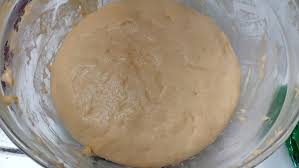
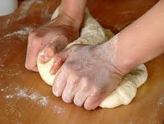
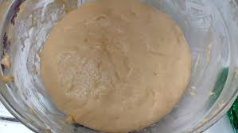
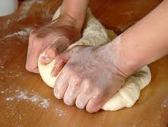

Bahan-bahan:
- 250 gr tepung terigu
- 1 butir telur
- 3 sdm margarin, lelehkan
- 100 ml air hangat
- 2 sdm susu bubuk (optimal)
- 1/2 sdt garam
- margarin leleh untuk olesan
- minyak untuk merendam
Langkah-langkah
- Campurkan semua bahan roti jadi satu

- Uleni sampai kalis (aku pake tangan) jangan takut jika adonan lengket ya,
lumuri tangan sesekali dengan tepung (tapi jangan menambahkan tepung)
uleni terus sampai adonan kalis

- Kalisnya adonan canai tidak sekalis adonan roti ya, kira2 seperti ini cukup

Langkah-langkah
- Campurkan semua bahan roti jadi satu 
- Uleni sampai kalis (aku pake tangan) jangan takut jika adonan lengket ya, lumuri tangan sesekali dengan tepung (tapi jangan menambahkan tepung) uleni terus sampai adonan kalis 
- Kalisnya adonan canai tidak sekalis adonan roti ya, kira2 seperti ini cukup